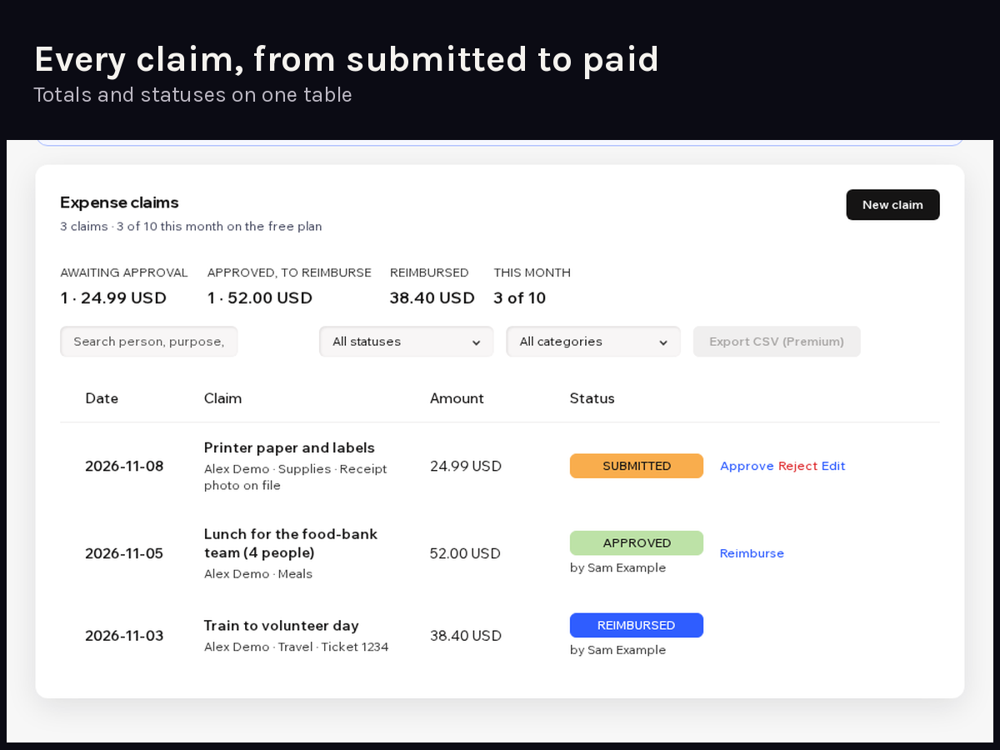

Expense: Staff & Volunteer
Staff and volunteer expense claims, tracked
- Submit travel, meal and supply claims
- Approve or reject with a name and note
- Mark approved claims as reimbursed
- Free covers 10 claims a month

What it does
Staff and volunteers often pay for things out of their own pocket: a train ticket, printer paper, a team lunch, mileage to a training day. This app keeps each claim in one place, from submission to reimbursement.
Each claim carries the date, who paid, a category, what it was for, the amount and a receipt or ticket number. Travel, meals, supplies, accommodation, mileage and other are ready as categories. A mileage claim takes kilometres and a rate, and the amount is worked out for you.
The table carries four counts: awaiting approval, approved to reimburse, reimbursed and claims this month. A claim is approved or rejected with a name and a short note, so the person who paid knows what happened. Once the money has gone back, the claim is marked reimbursed and the record keeps the approver and the date.
Search by person or purpose and filter by status or category to find an old claim quickly. Approved and reimbursed claims can be exported as CSV for your bookkeeping.
The free plan covers 10 claims a month, one submitter and one approver. Premium removes those limits and adds CSV export. Premium is $4 a month, or $3.33 billed yearly ($40 a year), with a 14-day trial.
Price
Free
- 10 claims a month
- One submitter and one approver
- All categories, mileage and search
- Approve, reject and mark reimbursed
Premium
$4/month, or $3.33/month billed yearly ($40/year), 14-day free trial
- Unlimited claims, submitters and approvers
- CSV export for bookkeeping
- Every free feature included
- Records of approver and payment date